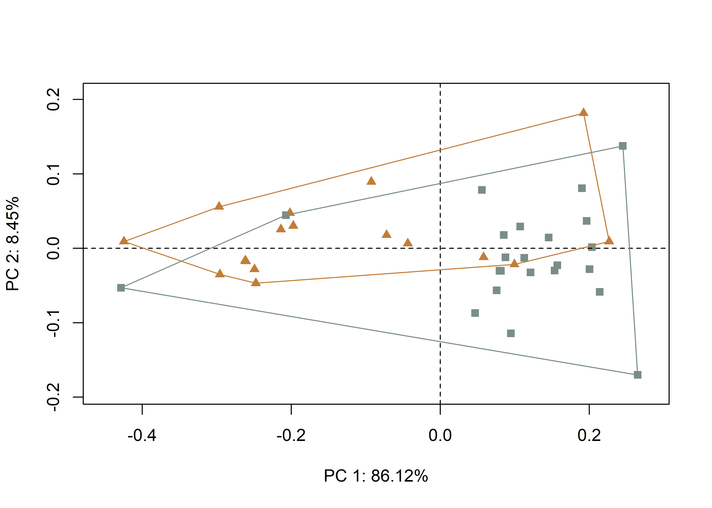

Chapter 4 Sculptural elements + Vessel form
4.1 Load packages + data
# load packages
#devtools::install_github("mlcollyer/RRPP")
#devtools::install_github("geomorphR/geomorph", ref = "Stable", build_vignettes = TRUE)
library(here)
library(geomorph)
library(tidyverse)
library(wesanderson)
# read GM data
source('readmulti.csv.R')
setwd("./data")
filelist <- list.files(pattern = ".csv")
coords <- readmulti.csv(filelist)
setwd("../")
# read qualitative data
qdata <- read.csv("qdata.csv",
header = TRUE,
row.names = 1)
qdata <- qdata[match(dimnames(coords)[[3]],
rownames(qdata)),]
qdata <- qdata %>%
unite("merged", group:type, remove = FALSE)4.2 Generalised Procrustes Analysis
Landmark data were aligned to a global coordinate system (Kendall 1981, 1984; Slice 2001), achieved through generalised Procrustes superimposition (Rohlf and Slice 1990) performed in R 4.0.3 (R Core Development Team, 2020) using the geomorph library v. 3.3.2 (Adams et al. 2017; Adams and Otárola-Castillo 2013). Procrustes superimposition translates, scales, and rotates the coordinate data to allow for comparisons among objects (Gower 1975; Rohlf and Slice 1990). The geomorph package uses a partial Procrustes superimposition that projects the aligned specimens into tangent space subsequent to alignment in preparation for the use of multivariate methods that assume linear space (Rohlf 1999; Slice 2001).
# gpa
Y.gpa <- gpagen(coords,
PrinAxes = TRUE,
ProcD = TRUE,
Proj = TRUE,
print.progress = FALSE)
# geomorph data frame
gdf <- geomorph.data.frame(shape = Y.gpa$coords,
size = Y.gpa$Csize,
merged = qdata$merged)
# render 3d gpa plot
plot(Y.gpa)
# gpa plot
#knitr::include_graphics('images/gpa3d.png')
# add centroid size to qdata
qdata$csz <- Y.gpa$Csize
# print updated qdata with centroid size
knitr::kable(qdata,
align = "lccccc",
caption = "Modified attributes included in qdata.")| merged | group | type | csz | |
|---|---|---|---|---|
| 1608101 | phytomorph_bottle | phytomorph | bottle | 480.3691 |
| 1608102 | phytomorph_bottle | phytomorph | bottle | 642.7924 |
| 1608111 | anthropomorph_jar | anthropomorph | jar | 585.9878 |
| 1608121 | phytomorph_jar | phytomorph | jar | 673.7326 |
| 1608122 | zoomorph_bottle | zoomorph | bottle | 578.2339 |
| 1608124 | zoomorph_bottle | zoomorph | bottle | 543.0810 |
| 1608125 | zoomorph_bottle | zoomorph | bottle | 538.4608 |
| 1608126 | zoomorph_jar | zoomorph | jar | 613.1277 |
| 1608129 | zoomorph_jar | zoomorph | jar | 511.8743 |
| 1608131 | zoomorph_jar | zoomorph | jar | 681.0963 |
| 1608140 | zoomorph_bottle | zoomorph | bottle | 558.2951 |
| 1608141 | anthropomorph_bottle | anthropomorph | bottle | 511.1698 |
| 1608163 | zoomorph_jar | zoomorph | jar | 432.3418 |
| 160836 | phytomorph_bottle | phytomorph | bottle | 509.1797 |
| 160839 | zoomorph_jar | zoomorph | jar | 416.4591 |
| 160844 | anthropomorph_jar | anthropomorph | jar | 607.4952 |
| 160846 | zoomorph_bottle | zoomorph | bottle | 545.1291 |
| 160847 | anthropomorph_bottle | anthropomorph | bottle | 416.4516 |
| 160848 | anthropomorph_jar | anthropomorph | jar | 468.6945 |
| 160849 | anthropomorph_bottle | anthropomorph | bottle | 453.0625 |
| 160850 | anthropomorph_bottle | anthropomorph | bottle | 751.5635 |
| 160852 | zoomorph_bottle | zoomorph | bottle | 512.1550 |
| 160852x | anthropomorph_jar | anthropomorph | jar | 596.2446 |
| 160859 | zoomorph_bottle | zoomorph | bottle | 512.3332 |
| 160860 | anthropomorph_jar | anthropomorph | jar | 449.6768 |
| 160868 | zoomorph_bottle | zoomorph | bottle | 674.0455 |
| 160873 | anthropomorph_jar | anthropomorph | jar | 590.1911 |
| 160874 | zoomorph_jar | zoomorph | jar | 574.2754 |
| 160875 | anthropomorph_bottle | anthropomorph | bottle | 687.1416 |
| 160876 | anthropomorph_bottle | anthropomorph | bottle | 591.4190 |
| 160881 | anthropomorph_jar | anthropomorph | jar | 416.0126 |
| 160882 | zoomorph_bottle | zoomorph | bottle | 544.4697 |
| 160884 | zoomorph_jar | zoomorph | jar | 418.5339 |
| 160886 | zoomorph_bottle | zoomorph | bottle | 441.5053 |
| 160888 | anthropomorph_bottle | anthropomorph | bottle | 379.4152 |
| 160892 | anthropomorph_jar | anthropomorph | jar | 384.3096 |
| 205854 | anthropomorph_bottle | anthropomorph | bottle | 407.5996 |
| 206614 | zoomorph_jar | zoomorph | jar | 458.8122 |
| 238944 | phytomorph_bottle | phytomorph | bottle | 701.0724 |
| PEX35 | zoomorph_bottle | zoomorph | bottle | 635.8740 |
4.2.1 Boxplot
# attributes for boxplot
csz <- qdata$csz
merged <- qdata$merged
# palette
pal <- wes_palette("Moonrise2", 6, type = "continuous")
# boxplot of vessel centroid size by merged
csz.merged <- ggplot(qdata, aes(x = merged, y = csz, color = merged)) +
geom_boxplot(notch = FALSE) +
geom_dotplot(binaxis = 'y', stackdir = 'center', dotsize = 0.3) +
scale_colour_manual(values = pal) +
theme(legend.position = "none") +
theme(axis.text.x = element_text(angle = 90, vjust = 0.5, hjust=1)) +
labs(x = 'Sculptural Element + Vessel Form',
y = 'Centroid Size')
# render plot
csz.merged## Bin width defaults to 1/30 of the range of the data. Pick better value with `binwidth`.(#fig:box1.s)Boxplot of centroid size by spatial/temporal unit.
4.3 Principal Components Analysis
Principal components analysis (Jolliffe 2002) was used to visualise shape variation among the bottles. The shape changes described by each principal axis are commonly visualised using thin-plate spline warping of a reference 3D mesh (Klingenberg 2013; Sherratt et al. 2014).
# principal components analysis
pca<-gm.prcomp(Y.gpa$coords)
summary(pca)##
## Ordination type: Principal Component Analysis
## Centering by OLS mean
## Orthogonal projection of OLS residuals
## Number of observations: 40
## Number of vectors 39
##
## Importance of Components:
## Comp1 Comp2 Comp3 Comp4
## Eigenvalues 0.004578891 0.003667324 0.001382186 0.0008285785
## Proportion of Variance 0.397734584 0.318553454 0.120060362 0.0719725303
## Cumulative Proportion 0.397734584 0.716288038 0.836348399 0.9083209295
## Comp5 Comp6 Comp7 Comp8
## Eigenvalues 0.0003034515 0.0002208111 0.0001798765 7.902524e-05
## Proportion of Variance 0.0263586061 0.0191802410 0.0156245463 6.864342e-03
## Cumulative Proportion 0.9346795356 0.9538597766 0.9694843229 9.763487e-01
## Comp9 Comp10 Comp11 Comp12
## Eigenvalues 6.182937e-05 4.576889e-05 3.548781e-05 2.855247e-05
## Proportion of Variance 5.370663e-03 3.975608e-03 3.082565e-03 2.480143e-03
## Cumulative Proportion 9.817193e-01 9.856949e-01 9.887775e-01 9.912576e-01
## Comp13 Comp14 Comp15 Comp16
## Eigenvalues 1.962854e-05 1.805515e-05 1.289413e-05 9.274920e-06
## Proportion of Variance 1.704987e-03 1.568318e-03 1.120019e-03 8.056441e-04
## Cumulative Proportion 9.929626e-01 9.945309e-01 9.956510e-01 9.964566e-01
## Comp17 Comp18 Comp19 Comp20
## Eigenvalues 8.294393e-06 5.673848e-06 4.698213e-06 4.479094e-06
## Proportion of Variance 7.204729e-04 4.928455e-04 4.080992e-04 3.890660e-04
## Cumulative Proportion 9.971771e-01 9.976699e-01 9.980780e-01 9.984671e-01
## Comp21 Comp22 Comp23 Comp24
## Eigenvalues 3.246003e-06 2.458537e-06 2.219666e-06 1.810992e-06
## Proportion of Variance 2.819564e-04 2.135551e-04 1.928060e-04 1.573075e-04
## Cumulative Proportion 9.987491e-01 9.989626e-01 9.991554e-01 9.993127e-01
## Comp25 Comp26 Comp27 Comp28
## Eigenvalues 1.397678e-06 1.173496e-06 1.076508e-06 8.259197e-07
## Proportion of Variance 1.214060e-04 1.019329e-04 9.350835e-05 7.174157e-05
## Cumulative Proportion 9.994341e-01 9.995361e-01 9.996296e-01 9.997013e-01
## Comp29 Comp30 Comp31 Comp32
## Eigenvalues 7.415893e-07 5.656128e-07 5.264698e-07 3.987210e-07
## Proportion of Variance 6.441641e-05 4.913063e-05 4.573057e-05 3.463396e-05
## Cumulative Proportion 9.997657e-01 9.998149e-01 9.998606e-01 9.998952e-01
## Comp33 Comp34 Comp35 Comp36
## Eigenvalues 3.448263e-07 2.895934e-07 1.986698e-07 1.756869e-07
## Proportion of Variance 2.995253e-05 2.515485e-05 1.725699e-05 1.526063e-05
## Cumulative Proportion 9.999252e-01 9.999503e-01 9.999676e-01 9.999828e-01
## Comp37 Comp38 Comp39
## Eigenvalues 1.286197e-07 6.622706e-08 2.627348e-09
## Proportion of Variance 1.117225e-05 5.752658e-06 2.282184e-07
## Cumulative Proportion 9.999940e-01 9.999998e-01 1.000000e+00# set plot parameters (mergeds)
pch.gps.merged <- c(1:6)[as.factor(merged)]
# plot pca by merged
plot(pca,
asp = 1,
pch = pch.gps.merged,
col = pal)
# pca warp
#knitr::include_graphics('images/pca-warp.jpg')4.4 Vessel size and shape
A residual randomisation permutation procedure (RRPP; n = 10,000 permutations) was used for all Procrustes ANOVAs (Adams and Collyer 2015; Michael L. Collyer and Adams 2018), which has higher statistical power and a greater ability to identify patterns in the data should they be present (Anderson and Ter Braak 2003). To assess whether shape changes differ by merged (geography and time), Procrustes ANOVAs (Goodall 1991) were also run that enlist effect-sizes (zscores) computed as standard deviates of the generated sampling distributions (M. L. Collyer, Sekora, and Adams 2015).
# size as a function of vessel form (bottle/jar)?
fit.size.merged <- procD.lm(size ~ merged,
data = gdf,
print.progress = FALSE,
iter = 9999)
# Procrustes ANOVA: do sizes differ as a function of vessel form?
anova(fit.size.merged)##
## Analysis of Variance, using Residual Randomization
## Permutation procedure: Randomization of null model residuals
## Number of permutations: 10000
## Estimation method: Ordinary Least Squares
## Sums of Squares and Cross-products: Type I
## Effect sizes (Z) based on F distributions
##
## Df SS MS Rsq F Z Pr(>F)
## merged 5 40683 8136.6 0.10834 0.8262 -0.13249 0.5511
## Residuals 34 334844 9848.4 0.89166
## Total 39 375527
##
## Call: procD.lm(f1 = size ~ merged, iter = 9999, data = gdf, print.progress = FALSE)# pairwise comparison of LS means = which differ?
pairwise.size <- pairwise(fit.size.merged,
groups = qdata$merged)
summary(pairwise.size,
confidence = 0.95,
test.type = "dist")##
## Pairwise comparisons
##
## Groups: anthropomorph_bottle anthropomorph_jar phytomorph_bottle phytomorph_jar zoomorph_bottle zoomorph_jar
##
## RRPP: 10000 permutations
##
## LS means:
## Vectors hidden (use show.vectors = TRUE to view)
##
## Pairwise distances between means, plus statistics
## d UCL (95%) Z
## anthropomorph_bottle:anthropomorph_jar 12.4013419 95.77783 -0.91939379
## anthropomorph_bottle:phytomorph_bottle 58.6255358 118.28244 0.47222530
## anthropomorph_bottle:phytomorph_jar 149.0047283 188.44790 1.04096716
## anthropomorph_bottle:zoomorph_bottle 28.3251127 90.48448 -0.07585358
## anthropomorph_bottle:zoomorph_jar 11.4127587 96.22955 -1.00331791
## anthropomorph_jar:phytomorph_bottle 71.0268777 117.85893 0.75515259
## anthropomorph_jar:phytomorph_jar 161.4060702 188.14201 1.18930986
## anthropomorph_jar:zoomorph_bottle 40.7264546 90.34794 0.35878341
## anthropomorph_jar:zoomorph_jar 0.9885832 95.17515 -2.09578323
## phytomorph_bottle:phytomorph_jar 90.3791926 203.37716 0.17510546
## phytomorph_bottle:zoomorph_bottle 30.3004231 112.54883 -0.24466237
## phytomorph_bottle:zoomorph_jar 70.0382945 115.33457 0.73578629
## phytomorph_jar:zoomorph_bottle 120.6796157 181.20314 0.69846187
## phytomorph_jar:zoomorph_jar 160.4174870 186.72968 1.18815713
## zoomorph_bottle:zoomorph_jar 39.7378714 89.40735 0.32578067
## Pr > d
## anthropomorph_bottle:anthropomorph_jar 0.8062
## anthropomorph_bottle:phytomorph_bottle 0.3386
## anthropomorph_bottle:phytomorph_jar 0.1595
## anthropomorph_bottle:zoomorph_bottle 0.5402
## anthropomorph_bottle:zoomorph_jar 0.8285
## anthropomorph_jar:phytomorph_bottle 0.2442
## anthropomorph_jar:phytomorph_jar 0.1174
## anthropomorph_jar:zoomorph_bottle 0.3833
## anthropomorph_jar:zoomorph_jar 0.9847
## phytomorph_bottle:phytomorph_jar 0.4605
## phytomorph_bottle:zoomorph_bottle 0.6032
## phytomorph_bottle:zoomorph_jar 0.2513
## phytomorph_jar:zoomorph_bottle 0.2859
## phytomorph_jar:zoomorph_jar 0.1184
## zoomorph_bottle:zoomorph_jar 0.3939# shape as a function of vessel form?
fit.shape.merged <- procD.lm(shape ~ merged,
data = gdf,
print.progress = FALSE,
iter = 9999)
# Procrustes ANOVA: do shapes differ as a function of vessel form?
anova(fit.shape.merged)##
## Analysis of Variance, using Residual Randomization
## Permutation procedure: Randomization of null model residuals
## Number of permutations: 10000
## Estimation method: Ordinary Least Squares
## Sums of Squares and Cross-products: Type I
## Effect sizes (Z) based on F distributions
##
## Df SS MS Rsq F Z Pr(>F)
## merged 5 0.08597 0.017194 0.19147 1.6103 1.432 0.0704 .
## Residuals 34 0.36302 0.010677 0.80853
## Total 39 0.44898
## ---
## Signif. codes: 0 '***' 0.001 '**' 0.01 '*' 0.05 '.' 0.1 ' ' 1
##
## Call: procD.lm(f1 = shape ~ merged, iter = 9999, data = gdf, print.progress = FALSE)# pairwise comparison of LS means = which differ?
pairwise.shape <- pairwise(fit.shape.merged,
groups = qdata$merged)
summary(pairwise.shape,
confidence = 0.95,
test.type = "dist")##
## Pairwise comparisons
##
## Groups: anthropomorph_bottle anthropomorph_jar phytomorph_bottle phytomorph_jar zoomorph_bottle zoomorph_jar
##
## RRPP: 10000 permutations
##
## LS means:
## Vectors hidden (use show.vectors = TRUE to view)
##
## Pairwise distances between means, plus statistics
## d UCL (95%) Z
## anthropomorph_bottle:anthropomorph_jar 0.06311600 0.08245142 0.7685885
## anthropomorph_bottle:phytomorph_bottle 0.07182271 0.10338720 0.5417042
## anthropomorph_bottle:phytomorph_jar 0.06433270 0.17504577 -1.0757226
## anthropomorph_bottle:zoomorph_bottle 0.04066424 0.07685081 -0.3055996
## anthropomorph_bottle:zoomorph_jar 0.07430126 0.08221864 1.3126701
## anthropomorph_jar:phytomorph_bottle 0.10588549 0.10293571 1.7370769
## anthropomorph_jar:phytomorph_jar 0.10857049 0.17389564 0.2998812
## anthropomorph_jar:zoomorph_bottle 0.07364376 0.07629534 1.4995678
## anthropomorph_jar:zoomorph_jar 0.02949470 0.08315592 -1.3338473
## phytomorph_bottle:phytomorph_jar 0.09550725 0.18648409 -0.1885698
## phytomorph_bottle:zoomorph_bottle 0.08366473 0.09830486 1.1391400
## phytomorph_bottle:zoomorph_jar 0.11794320 0.10262663 2.0983415
## phytomorph_jar:zoomorph_bottle 0.04455124 0.17133693 -2.0067031
## phytomorph_jar:zoomorph_jar 0.11768836 0.17439733 0.5077710
## zoomorph_bottle:zoomorph_jar 0.08107684 0.07654065 1.8195929
## Pr > d
## anthropomorph_bottle:anthropomorph_jar 0.2328
## anthropomorph_bottle:phytomorph_bottle 0.2947
## anthropomorph_bottle:phytomorph_jar 0.8759
## anthropomorph_bottle:zoomorph_bottle 0.6227
## anthropomorph_bottle:zoomorph_jar 0.0994
## anthropomorph_jar:phytomorph_bottle 0.0408
## anthropomorph_jar:phytomorph_jar 0.3728
## anthropomorph_jar:zoomorph_bottle 0.0670
## anthropomorph_jar:zoomorph_jar 0.9059
## phytomorph_bottle:phytomorph_jar 0.5824
## phytomorph_bottle:zoomorph_bottle 0.1316
## phytomorph_bottle:zoomorph_jar 0.0143
## phytomorph_jar:zoomorph_bottle 0.9718
## phytomorph_jar:zoomorph_jar 0.2960
## zoomorph_bottle:zoomorph_jar 0.03304.5 Morphological disparity
# morphological disparity: do either of the mergeds display greater
# size variation among individuals relative to the other merged?
morphol.disparity(fit.size.merged,
groups = qdata$merged,
data = gdf,
print.progress = FALSE,
iter = 9999)##
## Call:
## morphol.disparity(f1 = fit.size.merged, groups = qdata$merged,
## iter = 9999, data = gdf, print.progress = FALSE)
##
##
##
## Randomized Residual Permutation Procedure Used
## 10000 Permutations
##
## Procrustes variances for defined groups
## anthropomorph_bottle anthropomorph_jar phytomorph_bottle
## 1.676983e+04 7.385205e+03 8.374568e+03
## phytomorph_jar zoomorph_bottle zoomorph_jar
## 1.262177e-29 3.489322e+03 8.715393e+03
##
##
## Pairwise absolute differences between variances
## anthropomorph_bottle anthropomorph_jar
## anthropomorph_bottle 0.000 9384.6215
## anthropomorph_jar 9384.621 0.0000
## phytomorph_bottle 8395.259 989.3629
## phytomorph_jar 16769.826 7385.2049
## zoomorph_bottle 13280.504 3895.8830
## zoomorph_jar 8054.434 1330.1878
## phytomorph_bottle phytomorph_jar zoomorph_bottle
## anthropomorph_bottle 8395.2586 16769.826 13280.504
## anthropomorph_jar 989.3629 7385.205 3895.883
## phytomorph_bottle 0.0000 8374.568 4885.246
## phytomorph_jar 8374.5678 0.000 3489.322
## zoomorph_bottle 4885.2459 3489.322 0.000
## zoomorph_jar 340.8249 8715.393 5226.071
## zoomorph_jar
## anthropomorph_bottle 8054.4337
## anthropomorph_jar 1330.1878
## phytomorph_bottle 340.8249
## phytomorph_jar 8715.3927
## zoomorph_bottle 5226.0708
## zoomorph_jar 0.0000
##
##
## P-Values
## anthropomorph_bottle anthropomorph_jar
## anthropomorph_bottle 1.0000 0.0576
## anthropomorph_jar 0.0576 1.0000
## phytomorph_bottle 0.1593 0.8635
## phytomorph_jar 0.0743 0.3527
## zoomorph_bottle 0.0024 0.4120
## zoomorph_jar 0.1058 0.7871
## phytomorph_bottle phytomorph_jar zoomorph_bottle
## anthropomorph_bottle 0.1593 0.0743 0.0024
## anthropomorph_jar 0.8635 0.3527 0.4120
## phytomorph_bottle 1.0000 0.3118 0.3753
## phytomorph_jar 0.3118 1.0000 0.6793
## zoomorph_bottle 0.3753 0.6793 1.0000
## zoomorph_jar 0.9511 0.2610 0.2632
## zoomorph_jar
## anthropomorph_bottle 0.1058
## anthropomorph_jar 0.7871
## phytomorph_bottle 0.9511
## phytomorph_jar 0.2610
## zoomorph_bottle 0.2632
## zoomorph_jar 1.0000# morphological disparity: do either of the mergeds display greater
#shape variation among individuals relative to the other merged?
morphol.disparity(fit.shape.merged,
groups = qdata$merged,
data = gdf,
print.progress = FALSE,
iter = 9999)##
## Call:
## morphol.disparity(f1 = fit.shape.merged, groups = qdata$merged,
## iter = 9999, data = gdf, print.progress = FALSE)
##
##
##
## Randomized Residual Permutation Procedure Used
## 10000 Permutations
##
## Procrustes variances for defined groups
## anthropomorph_bottle anthropomorph_jar phytomorph_bottle
## 1.834422e-02 6.762517e-03 7.654401e-03
## phytomorph_jar zoomorph_bottle zoomorph_jar
## 7.099577e-35 5.859419e-03 8.386502e-03
##
##
## Pairwise absolute differences between variances
## anthropomorph_bottle anthropomorph_jar
## anthropomorph_bottle 0.000000000 0.0115817063
## anthropomorph_jar 0.011581706 0.0000000000
## phytomorph_bottle 0.010689822 0.0008918844
## phytomorph_jar 0.018344223 0.0067625166
## zoomorph_bottle 0.012484804 0.0009030980
## zoomorph_jar 0.009957721 0.0016239852
## phytomorph_bottle phytomorph_jar zoomorph_bottle
## anthropomorph_bottle 0.0106898219 0.018344223 0.012484804
## anthropomorph_jar 0.0008918844 0.006762517 0.000903098
## phytomorph_bottle 0.0000000000 0.007654401 0.001794982
## phytomorph_jar 0.0076544010 0.000000000 0.005859419
## zoomorph_bottle 0.0017949824 0.005859419 0.000000000
## zoomorph_jar 0.0007321008 0.008386502 0.002527083
## zoomorph_jar
## anthropomorph_bottle 0.0099577211
## anthropomorph_jar 0.0016239852
## phytomorph_bottle 0.0007321008
## phytomorph_jar 0.0083865018
## zoomorph_bottle 0.0025270832
## zoomorph_jar 0.0000000000
##
##
## P-Values
## anthropomorph_bottle anthropomorph_jar
## anthropomorph_bottle 1.0000 0.0547
## anthropomorph_jar 0.0547 1.0000
## phytomorph_bottle 0.1598 0.8579
## phytomorph_jar 0.0256 0.3360
## zoomorph_bottle 0.0146 0.8526
## zoomorph_jar 0.1272 0.7400
## phytomorph_bottle phytomorph_jar zoomorph_bottle
## anthropomorph_bottle 0.1598 0.0256 0.0146
## anthropomorph_jar 0.8579 0.3360 0.8526
## phytomorph_bottle 1.0000 0.2931 0.7201
## phytomorph_jar 0.2931 1.0000 0.4120
## zoomorph_bottle 0.7201 0.4120 1.0000
## zoomorph_jar 0.8842 0.2397 0.6207
## zoomorph_jar
## anthropomorph_bottle 0.1272
## anthropomorph_jar 0.7400
## phytomorph_bottle 0.8842
## phytomorph_jar 0.2397
## zoomorph_bottle 0.6207
## zoomorph_jar 1.00004.6 Mean shapes
# subset landmark coordinates to produce mean shapes
new.coords<-coords.subset(A = Y.gpa$coords,
group = qdata$merged)
names(new.coords)## [1] "anthropomorph_bottle" "anthropomorph_jar" "phytomorph_bottle"
## [4] "phytomorph_jar" "zoomorph_bottle" "zoomorph_jar"# merged shape means
mean <- lapply(new.coords, mshape)
# plot mean shapes (merged)
plot(mean$anthropomorph_bottle)
plot(mean$anthropomorph_jar)
plot(mean$phytomorph_bottle)
plot(mean$phytomorph_jar)
plot(mean$zoomorph_bottle)
plot(mean$zoomorph_jar)
# comparison plots
plotRefToTarget(mean$anthropomorph_bottle,
mean$zoomorph_jar,
method = c("points"),
mag = 1)
#knitr::include_graphics('images/mshape.png')